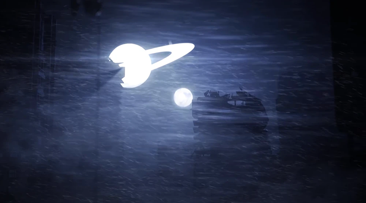
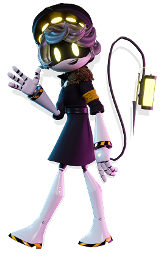
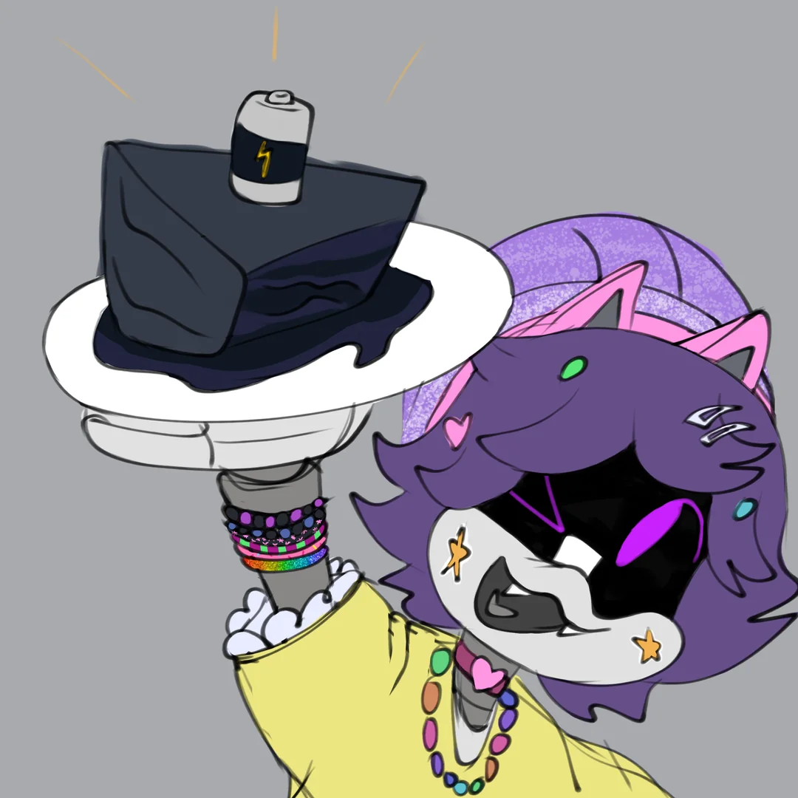
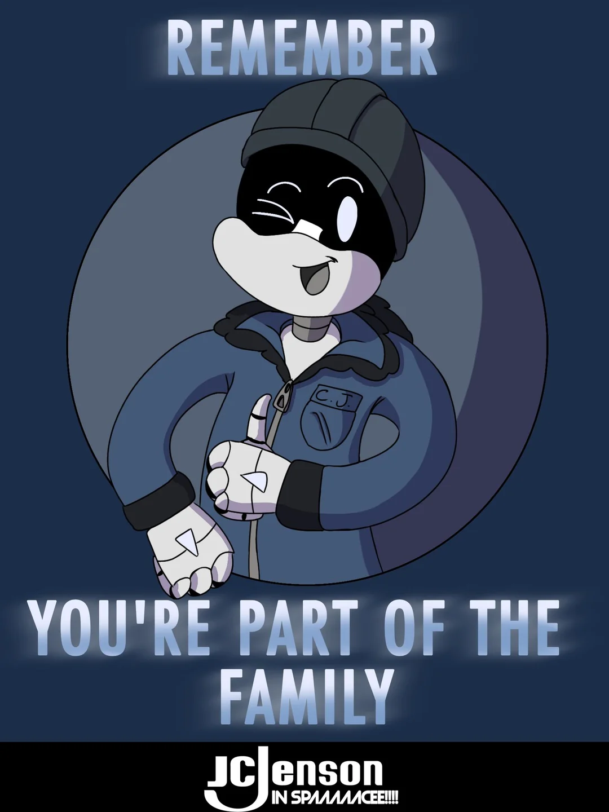
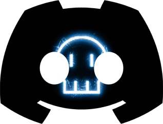

WELCOME TO
Quick recap of full series for newbie that here

Murder Drones are an animated sci-fi comedy created by Glitch Productions and Liam Vickers. The story takes place on the exoplanet Copper 9, where all humans died due to a massive explosion — a mistake of their own. However, people on Earth blame the mining drones and send special murder drones to eliminate them. The story begins when a worker drone named Uzi, tired of hiding behind three massive doors, builds a railgun to fight back. But she soon discovers that one of the murder drones, named N, may not be as murderous as she imagined.
Meet 3 main characters:
Uzi
Uzi is the main character of the show. She’s a worker drone and the daughter of Khan and Nori.
Driven by a desire to avenge her fellow worker drones, she initially fights against SD-N.
However, after their first battle, she forms a strong friendship with him — one that eventually
develops into a romantic relationship.
With N as her only friend, Uzi discovers that she is possessed by the Absolute Solver, an
immensely powerful eldritch intelligence that influences her actions.
After the events of “Absolute End,” she learns to control it and use its power by her own will.
'In the same event, she swallows Cyn’s core, which now lives inside her tail.

Serial Designation N
Serial Designation N (often just called N) is a disassembly drone sent to Copper-9 by JCJenson to
eliminate all “runaway AI,” better known as worker drones.
While his past remains foggy, it’s hinted that he was once a worker drone serving in a castle-like estate
before being repurposed.Unlike most disassembly drones, N stands out for his kind-hearted and awkward personality.
N quickly becomes fascinated by Uzi’s rebellious spirit, and despite their rocky first encounter, he forms a close
bond with her — one that grows into a romantic relationship. He is known for his clumsy charm, loyalty,
and eagerness to please, often trying to prove himself to both his fellow drones and Uzi.Despite being underestimated
by other disassembly drones (especially V), N demonstrates surprising bravery and determination when protecting his friends.
Serial Designation V
Serial Designation V is a disassembly drone sent to Copper‑9 by JCJenson to eliminate worker drones.
Unlike N, she fully embraces her role as a killer, showing little remorse and often enjoying the hunt.
V is sarcastic, ruthless, and confident in her abilities, often mocking N for his kindness and clumsiness.
Her past is less explored, but she represents the cold, corporate side of the drones — loyal to her
programming and driven by destruction. Despite this, moments of vulnerability suggest there may be
more beneath her violent persona. V’s relationship with N is complicated: she belittles him, yet relies
on his support during missions. Her encounters with Uzi highlight her as both a dangerous enemy and a
character with hidden depth.
Fan art spotlight
Kidcore Uzi offers you a battery cake!
u/Piray_thedemon

JcJenson Work poster
u/Piray_thedemon

The murder drones discord!

By clicking here you will meet the most brain-washed
by murder drones user`s that you will ever encounter